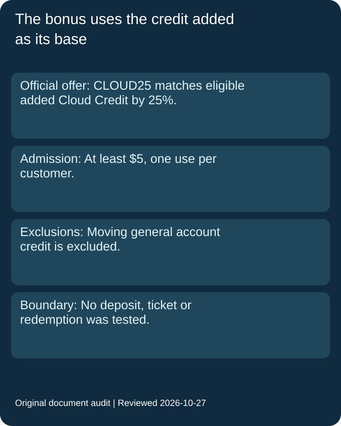
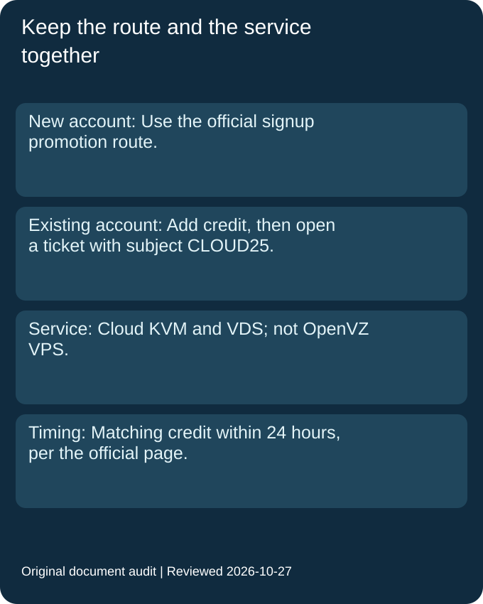

Is CLOUD25 a 25% reduction in a server price?
The official statement is an extra-credit match on eligible Cloud Credit added. This page does not relabel it as a reduction in a server price.
Official source · Reviewed 2026-10-27
RamNode promo code
The official RamNode promotion page publishes CLOUD25 for an extra 25% Cloud Credit when you add at least $5. It is limited to one use per customer and Cloud KVM/VDS, with OpenVZ excluded. Existing customers are told to add credit and open a ticket with subject CLOUD25. A fixed campaign expiry is not published.
Read the official offer and its conditions · Last checked and updated: 2026-10-27T09:05+08:00
| Offer | Admission and expiry status | Official source | Reviewed |
|---|---|---|---|
| CLOUD25: extra 25% Cloud Credit | Add at least $5 in Cloud Credit through the official promotion route. Limited to one use per customer. No fixed campaign end date is published. | Official source | 2026-10-27 |
| Condition | Official scope | Official source | Reviewed |
|---|---|---|---|
| Existing customers | Add credit and open a support ticket with subject CLOUD25. | Official source | 2026-10-27 |
| Matching time | The official page says matching credit will be added within 24 hours. | Official source | 2026-10-27 |
| Funding exclusion | Moving general account credit to cloud does not qualify. | Official source | 2026-10-27 |
| Eligible service | Only Cloud KVM and VDS; the page explicitly excludes OpenVZ VPS. | Official source | 2026-10-27 |
| Unpublished expiry and prices | A fixed closing date is not published; that does not mean permanent. No server plan price is quoted here. | Official source | 2026-10-27 |
Our original worksheet records the amount added, the source of that amount, the target service, the customer route and whether the promotion has already been used. These are separate inputs. The output is an evidence status and, only after a hypothetical case satisfies the documented conditions, an arithmetic illustration of the bonus. It does not deposit money, open a ticket, redeem a code or establish that a real account qualifies.
The official wording describes a match on added Cloud Credit. It does not describe reducing a server invoice by that same percentage. In a synthetic case, assume an eligible ten-dollar addition and no previous use. Multiplying ten by the published rate of one quarter gives a two-dollar-and-fifty-cent bonus. Adding those amounts gives twelve dollars and fifty cents of nominal credit, subject to the actual offer being honoured. Ten dollars remains the assumed cash addition; the worksheet never turns it into a seven-dollar-and-fifty-cent payment.
A reader comparing ratios must therefore keep two denominators distinct. The bonus divided by the addition is one quarter. The bonus divided by the combined nominal credit is one fifth. The second ratio is calculated, not an official discount label, and is not a promise of lower bills. It assumes the entire credited value can be used for the intended eligible service. Unused balances, account restrictions or a different purchase would break that interpretation. We do not quote an actual server price or a guaranteed effective saving.
Our boundary cases use fictional amounts immediately below and at the published five-dollar minimum. An addition of four dollars and ninety-nine cents fails the amount field; an addition of five dollars passes that field alone. Passing one field does not approve the promotion. The worksheet must still inspect the service and the one-use condition. A five-dollar transfer from general account credit is a different case: it meets the numerical boundary but fails the documented funding-source condition.
That separation is useful because identical visible balances can come from different operations. The ledger keeps a payment adding eligible credit apart from moving an existing general balance. It does not infer eligibility from a balance screenshot, and it does not assume that a large transfer repairs an excluded funding source. We retain the operation that produced the amount as evidence instead of reducing every case to a number.
For an existing customer, the official route includes a ticket after adding credit. Our worksheet stores that action separately from the addition and from the later matching credit. The published time allowance is not evidence that our own account has received anything. A hypothetical eligible addition with no recorded match stays pending, not successfully redeemed. Finally, the reviewed page gives no fixed campaign end date. The date of this review is an observation timestamp, not a substitute expiry date or an assurance that the promotion will stay available.


Worksheet input source: RamNode current promotions, reviewed 2026-10-27.
The official statement is an extra-credit match on eligible Cloud Credit added. This page does not relabel it as a reduction in a server price.
Official source · Reviewed 2026-10-27
The official page directs existing customers to add credit and open a ticket with subject CLOUD25, subject to its one-use condition.
Official source · Reviewed 2026-10-27
No. The page explicitly excludes moving general account credit to cloud, independently of the minimum amount.
Official source · Reviewed 2026-10-27
The promotion is for Cloud KVM and VDS and does not apply to OpenVZ VPS.
Official source · Reviewed 2026-10-27